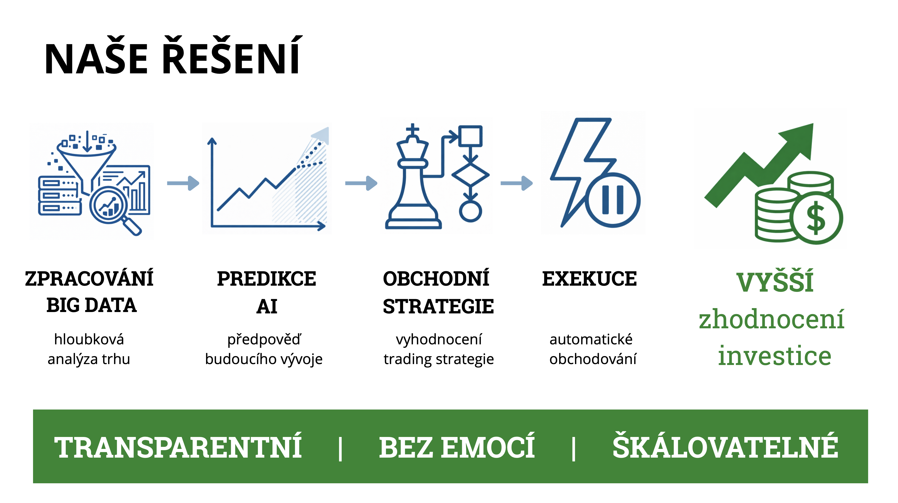

Naše řešení je plně autonomní AI trading platforma.
Systém nejprve zpracuje obrovské množství dat z finančních trhů.
Následně pomocí umělé inteligence analyzuje kontext a předpovídá pravděpodobný vývoj trhu.
Na základě těchto predikcí vyhodnotí nejvhodnější obchodní strategii, nastaví parametry obchodu a automaticky provede exekuci.
Celý proces probíhá bez emocí, transparentně a ve velkém měřítku.